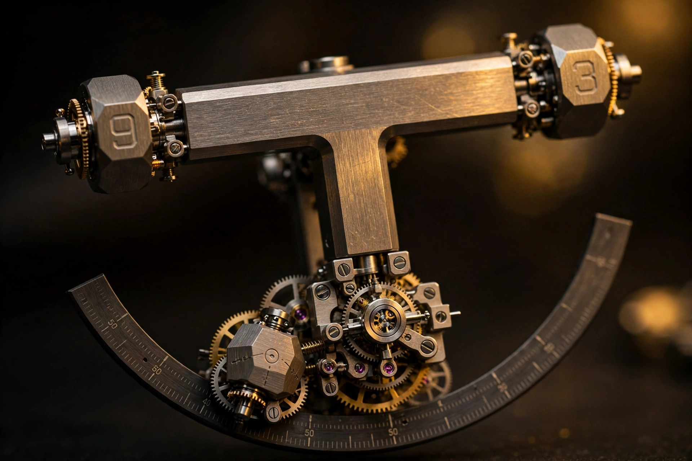

Twelve Hours, Four Prisms: How the Urwerk UR-300 Rebuilt the Wandering Hour

Start with the lineage, because Urwerk is one of the few independent brands whose entire identity is a single complication. Founded in 1997 around the wandering hour, a display that dates to the mid-17th century, the company has spent nearly three decades evolving it through increasingly elaborate hardware, from wandering discs to rotating satellites to cubes with telescoping minute hands to roller-based systems. Every generation kept one thing constant: the display was built on rotating symmetrical arms carrying discs or cubes. Symmetry was the design language. No Urwerk before this one abandoned it, and the break is deliberate. A symmetric carousel can only hand the hour from one arm to the next. An asymmetric frame can rearrange itself.
What replaces the carousel is what Urwerk calls the T-frame, and the name undersells the strangeness. Two carriers sit at 90 degrees to each other forming a T, each holding a three-sided prism at both of its ends, so that four prisms collectively carry the twelve hour numerals. Urwerk names the carrier lying on the movement's center axis the stem and the one at right angles the crown, and during the hour, the prism at the base of the stem travels slowly across the minute track, a 108-degree arc at six o'clock, with the hour numeral itself acting as the pointer. So far this is recognisably a wandering hour. Then the hour ends, and the frame does something no Urwerk has done before.
The T-frame, step by step
When the prism reaches the 60-minute mark, three events fire simultaneously. First, the two bars swap places, each pivoting on its own centre so the vertical bar rotates to lie horizontally across the top while the horizontal bar rotates to become the new vertical bar. Second, the carousel carrying both bars jumps forward 72 degrees, bringing the new vertical bar into alignment with the start of the minute track; third, all four prisms rotate one face on their long axes, so the correct hour numeral lands at the bottom. One jump, three motions, and the display has completely re-indexed itself. Revolution's launch coverage, the clearest published walkthrough, describes it as a single event rather than a sequence, which matters: the mechanism does not hand off from one motion to the next. Everything fires together.
Two numbers in that description deserve a closer look, because both are derived rather than chosen. Simple subtraction explains the 108-degree minute arc. An arm carrying the entire display rotates 180 degrees per hour, driven through a reduction gear, presumably off the minute wheel, which itself turns once per hour; at the end of the hour, the frame jumps forward 72 degrees. So each hour prism sweeps 180 minus 72, or 108 degrees, across the minute track. Nothing about the arc is styled: it is simply the remainder after the jump is subtracted from the hour's rotation.
Now the numbering, which is the neatest piece of logic in the watch. Each prism sits at the bottom of the T once every four hours, which is why each prism carries hours spaced four apart: one prism holds 1, 5 and 9, another 2, 6 and 10, and so on through 4, 8 and 12. Every prism rotates one face at every jump, not just the one at the bottom, and with only three faces, three turns bring a prism back to its starting face while the fourth advances it by one. Take the prism showing 1: it turns to 5, then 9, then back to 1, and the fourth turn lands on 5, exactly four hours later, precisely when that prism returns to the base of the frame. This arithmetic closes perfectly, and it has to, since no correction mechanism could fit in the space remaining: if the numbering were wrong by a single face, the watch would display the wrong hour with total confidence.
Here is the detail that separates the UR-300 from its predecessors: in earlier Urwerks, only the incoming disc or cube turned at the hour change. Here, all four prisms turn at every jump, because the prisms on each bar are geared to a shared wheel at the bar's centre, so when the mechanism fires, every prism is forced to rotate whether it is at the bottom of the frame or not. Three of the four rotations are, strictly speaking, wasted motion, and Revolution notes the likely cost: the extra movement consumes more energy, and the 44-hour power reserve is a few hours short of many recent Urwerks. Spectacle has a power-reserve price, and Urwerk paid it openly.
The jump is a cam, like everything else
Strip away the science-fiction staging and the jump mechanism is familiar hardware, as a technical breakdown from The 1916 Company describes it plainly: a rack rides on the edge of a cam, and as the cam follower is pushed outward by the cam's profile, a spring tensions. When the follower drops off the cam's highest point, the rack snaps and the module jumps 72 degrees clockwise, with crown-wheel gearing translating the horizontal snap into axial rotation of the carriers. Anyone who has studied a retrograde seconds display will recognise the architecture. It is the same energy-storage-and-release trick: accumulate slowly, release instantly.
What is not familiar is the load. Inertia is the single hardest engineering problem in the UR-300, per the same breakdown. At the top of each hour the entire display, frame, carriers, four prisms and their gearing, has to jump 72 degrees effectively instantaneously. Rotating mass that must change state in a fraction of a second is the oldest problem in mechanism design, and the answer is always the same: take mass out, and put the remaining mass where the physics is kindest.
Read the materials list with that problem in mind and it stops looking like a marketing brochure. Its bill of materials reads beryllium copper, brass, anodized aluminum, ARCAP AP1D (a non-magnetic nickel-silver alloy), titanium, and LIGA-fabricated nickel, and every entry is either light, non-magnetic, or formable at micron tolerances, several of them all three. Anodized aluminum and titanium buy low density for the larger structural parts, while beryllium copper brings stiffness and non-magnetic behaviour to the small stressed components. ARCAP keeps the module magnetically invisible to the steel around it, and LIGA, the German acronym for lithography-electroforming-moulding, produces nickel micro-parts by growing them in a mould rather than cutting them, which is how you make gearing this fine without introducing the stresses of machining. Nobody chose these materials for how they photograph. They are a bill of materials for a mechanism that has to jump.
Urwerk also fits a variation of its Dual Flow Turbines to the winding system, using air resistance to govern the rotor's speed, absorb shocks, and meter torque delivery to the automatic winding works, and turbines on a winding rotor sound like decoration until you consider the duty cycle: the automatic winding components are among the hardest-working parts in any watch, and a rotor that spins freely hammers its bearings and reverser wheels. Governing it with air drag is a neat piece of passive engineering, no electronics, no friction brake to wear, just fluid resistance doing the regulating, and it will not appear in the spec table's headline figures, but it is the kind of detail that tells you the engineers were thinking about year ten, not day one.
Quantized, literally
Now the name, because it demands an honest accounting: Urwerk says the watch was inspired by quantum mechanics, and The 1916 Company believes this is the first time any watch company, independent or otherwise, has claimed direct inspiration from the field. Quantization is the specific inspiration: in quantum mechanics, certain values exist only as discrete states, and transitions between them are instantaneous. An electron does not slide between energy levels; it jumps. A jumping display makes the parallel write itself, and you wonder why nobody claimed it sooner.
Here is the uncomfortable part, stated plainly: this is among the more defensible physics metaphors in watch marketing, and it is still poetry. And yet the display genuinely is quantized. Time appears in discrete states with instantaneous transitions and no continuous sweep, which is precisely what quantization means as a description of the output. But the mechanism producing it is entirely classical: cams, racks, springs, crown wheels. No superposition is involved, no measurement problem, no wave function collapses when you glance at your wrist. A jumping-hours pocket watch from the 1920s is equally quantized. Quantum branding dresses a classical mechanism in the language of a physics it does not use.
Why mention the wave-function angle at all, then? Because The 1916 Company's reading is more interesting than the press release: we never experience the wave function as an ensemble, only discrete outcomes, and that gap between continuous mathematics and discrete experience is one of the genuinely open problems in physics. A mechanical watch is a machine for converting the continuous rotation of a gear train into discrete human-readable states, which makes every jumping display ever made a tiny monument to that conversion. Urwerk just built the most elaborate one to date and named the phenomenon, and as criticism, the physics metaphor does real work even where it fails as engineering description, which is worth more than another press release about heritage.
The valve-train parallel
This is a watches-and-cars publication, so here is the structural crossover, and it is not forced. A cam profile pushing a follower against a spring until the follower drops off the lobe and everything snaps: the hour-jump mechanism is a valve train in miniature. An engine's camshaft does exactly this, a rotating profile lifting a follower against valve-spring pressure, then letting it drop, converting smooth rotation into a violent timed event, and Urwerk's cam does the same job at a scale where the whole event fits inside a space smaller than a coin. Different fluid being managed, air and fuel versus the hour numeral, but the problem statement is identical: store energy slowly, release it on a cam's schedule.
Even the materials logic rhymes. Engine builders lightweight valvetrains for the same reason Urwerk lightweighted the T-frame: reciprocating mass that must reverse or jump on a deadline. Titanium retainers, hollow valves, finger followers: every gram removed from a valvetrain buys rpm before valve float, and every gram removed from the T-frame buys jump reliability before the spring's energy budget runs out. Beryllium copper even has an automotive-adjacent pedigree in non-sparking tools and high-performance valve seats, though the honest version is that both industries arrived at the same materials by solving the same differential equation, not by copying each other. Physics does not care which industry you work in.
One more parallel, and it is about restraint: violent by watchmaking standards, the 72-degree jump needs containing, and the Dual Flow Turbines do for the winding system what the rack-and-cam does for the display. Engine management is the same discipline: combustion is an explosion, and the entire engine is a machine for making explosions boring and repeatable. Urwerk's achievement here is not that the display jumps. It is that it jumps the same way every hour, for years, without shaking itself apart. Boring repeatability is the actual luxury good.
What it costs, in every currency
Honesty requires the ledger. Case dimensions end the wearability conversation fast: 45.2 millimetres wide, 58.8 long, 18.25 thick, Grade 5 titanium. That length is the number that does it: 58.8 millimetres of case length overhangs the vast majority of wrists, and no strap geometry fixes leverage. Urwerk offers two finishes, bare titanium and a black version done by plasma-enhanced chemical vapour deposition, in editions of 25 pieces each, though one outlet described the black finish as AlTiN while the mechanism coverage describes a PE-CVD process, and since AlTiN is conventionally a PVD-applied coating, PECVD is the safer description until Urwerk publishes the process sheet. Water resistance is listed as 30 metres in the spec table and 20 in one retailer's writeup; either way, this is a watch that fears sinks.
Then the price: CHF 168,000 before taxes, on a NATO strap. At that figure the UR-300 is not competing with other watches. It is competing with kinetic sculpture, and it should be judged that way. Forty-four hours of power reserve is short for a modern automatic, and it tells you where the budget went, into the hourly event rather than autonomy; inside beats the automatic calibre UR-30.01V at 4 Hz, though some coverage attributes its base to Vaucher while Urwerk's published materials name only the designation, so the base calibre stays in the unverified column.
Is it worth it? Wrong question, and this publication does not answer that question for watches at fifty times the median income anyway; whether the mechanism earns its complexity is the right question, and here the answer is unusually clear. Complicated is the wrong word for the T-frame: it is the simplest mechanism that produces this particular event. A symmetric carousel cannot swap its own bars. Four prisms cannot re-index without turning together. No 72-degree jump, no 108-degree arc. Every strange decision in the watch is load-bearing. You can dislike the size, the price, and the quantum poetry, all reasonable positions, but you cannot call it arbitrary. Twenty-nine years into the wandering hour, Urwerk finally found the version that could not have been built any other way.
| Specification | Urwerk UR-300 Time Quantum |
|---|---|
| Reference and edition | UR-300-TQ; two editions of 25 pieces (Grade 5 titanium, and Grade 5 titanium with black PE-CVD treatment) |
| Movement | Calibre UR-30.01V, automatic, 28,800 vph (4 Hz), approximately 44-hour power reserve; base calibre unattributed in Urwerk's published materials (some outlets report a Vaucher base) |
| Display mechanism | Jumping T-frame: two carriers at 90 degrees (stem and crown), four three-sided prisms carrying all 12 hours; at each hour the frame jumps 72 degrees, the carriers swap roles, and all four prisms rotate one face simultaneously |
| Minute track | 108-degree arc at six o'clock; derived from 180 degrees of hourly carrier rotation minus the 72-degree jump |
| Seconds | Discreet display beside the minute track: three hands, each covering 20 seconds across a 120-degree arc |
| Display materials | Beryllium copper, brass, anodized aluminum, ARCAP AP1D (non-magnetic nickel-silver alloy), titanium, LIGA-fabricated nickel; chosen for low inertia and micron-scale formability |
| Jump mechanism | Rack-and-cam: rack rides cam edge, follower tensions spring, follower drops off cam peak and rack snaps, driving the 72-degree jump; crown-wheel gearing converts to axial carrier rotation |
| Winding regulation | Urwerk Dual Flow Turbines: air resistance governs automatic rotor speed, absorbing shocks and metering torque to the winding system |
| Case | Grade 5 titanium, 45.2 mm wide x 58.8 mm long x 18.25 mm thick; NATO strap |
| Water resistance | 30 metres per Urwerk's spec table; one retailer lists 20 metres |
| Price | CHF 168,000 excluding taxes |
| Launch | Soft-launched under embargo during Geneva Watch Days; officially launched at WatchTime New York during New York Watch Week, mid-October 2026 |
| Unresolved | Base calibre attribution (Vaucher) unverified in Urwerk's materials; black-finish process described as AlTiN by one outlet vs PE-CVD by two; water resistance 20 vs 30 m across sources; no independent hands-on review published yet |
Honesty block: This article is based on Urwerk's launch materials as reported by Revolution (October 15, 2026), The 1916 Company (October 27, 2026), Haute Time (October 15, 2026), Fratello (October 16, 2026), WhoWatchWear (October 15, 2026), The Watch Warbler (October 19, 2026), Gear Patrol (October 19, 2026), and Collective Horology (circa October 22, 2026). I have not handled this watch, and no independent hands-on review has been published. The kinematic description (72-degree jump, 120-degree prism rotation, bar swap, 108-degree arc derivation) is corroborated by Revolution and The 1916 Company; where their sequencing of the three simultaneous events differs presentationally, all sources agree the events fire together. The materials list (beryllium copper, ARCAP AP1D, LIGA nickel) is per The 1916 Company's technical breakdown. The black case finish is described as PE-CVD by Revolution and The 1916 Company and as AlTiN by one other outlet; AlTiN is conventionally PVD-applied, so PE-CVD is carried as the primary description. The Vaucher base-calibre attribution appears in some coverage but not in Urwerk's published materials. Water resistance is 30 metres per the spec table and 20 metres per one retailer. The quantum-mechanics framing is Urwerk's stated inspiration as reported by The 1916 Company; the physics commentary is my own.
Twenty-nine years is a long time to spend on one complication, and most brands would have run out of variations a decade ago and started issuing new dial colours. Urwerk instead kept asking what the wandering hour could become if you stopped assuming the display had to be symmetric, and the UR-300 is the answer that took the longest to reach: a frame that destroys and rebuilds itself once an hour, on a cam's schedule, out of materials chosen because the whole assembly has to jump. Quantum branding is poetry. The cam is engineering. And the cam, as always, is the part that has to work.